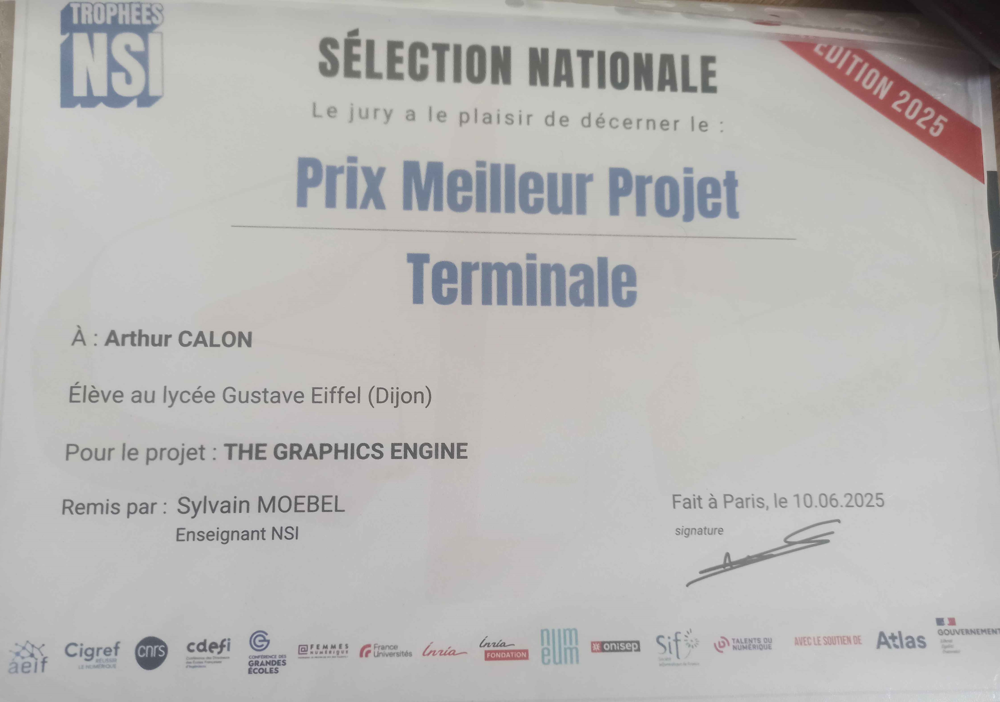
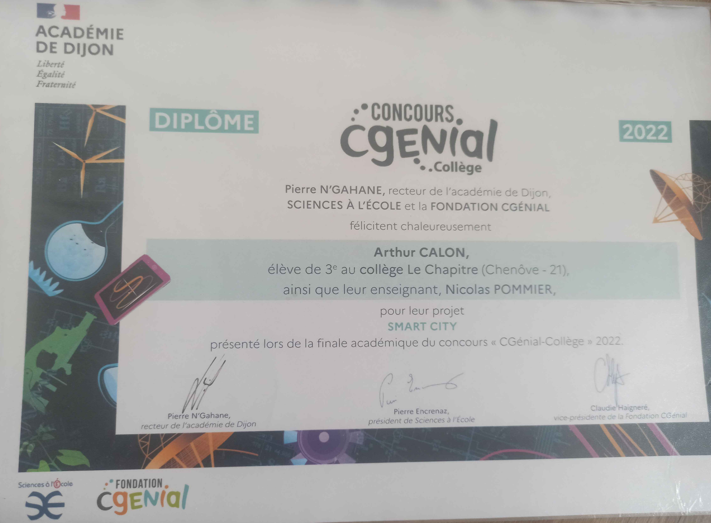
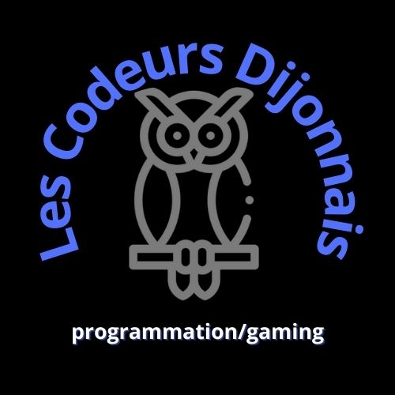

The Graphics Engine — prix meilleur projet en finale nationale
Logiciel de dessin avec fonctionnalités complexes (fractales, ...) développé en Python, primé aux Trophées NSI 2025 (terminale).

Logiciel de dessin avec fonctionnalités complexes (fractales, ...) développé en Python, primé aux Trophées NSI 2025 (terminale).

Application liée au projet SmartCity, créée dans le cadre du concours CGénial Collèges 2022.

Site web de mon serveur Discord personnel, développé en HTML/CSS/JS.

Recherche d'équivalence de commandes windows / linux - debian (expérimental)
Kit pour mettre en place un système de développement à distance, depuis n'importe quel appareil (expérimental)
Système d'upscaling d'images (expérimental)